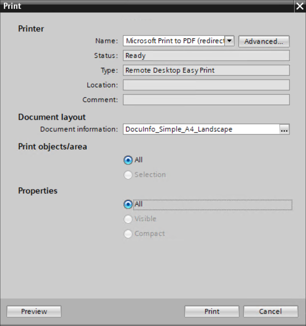

Printing active plants
The print option in the toolbar is active for the automation station and allows to print the content of all charts.
- Open the programming editor for a plant.
- Click the empty chart area.
- The print option
 enables on the toolbar.
enables on the toolbar. - Click .
- The Print window displays.

- Enter the values in the following fields:
- Select the print format in the Name field.
- Select the layout of the document in the Document information field and click .
- Click Print.
Note: To view the print preview, see Print preview. - The print runs for a few seconds and the print progress is seen at the bottom right of the window.
- A local path opens to save the print document.
- Enter a filename and click Save.
- The system prints the plant information.